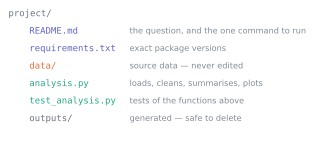

11. Work someone else can rerun
Python · Unit 11
Why this unit is here
An analysis nobody can rerun is an opinion with numbers attached.
The someone who most often cannot rerun it is you, four months later, with a marker asking how you got a figure. Everything in this unit is aimed at that moment: a folder a stranger can open, run one command in, and get your numbers back.
It is also the unit where the habits of the whole Python track stop being separate tricks and become one way of working.
11.1 Before you start
You should be able to:
- load, clean, group and join a table — P9;
- produce and save a labelled figure — P10;
- write a function with an assertion — P5.
Quick check. Why did P9 write the excluded rows to a file rather than just counting them?
TipShow the answer
Because “we dropped three rows” cannot be checked and “here are the three rows and why” can. Every exclusion is a decision, and a decision nobody can inspect is indistinguishable from a mistake.
11.2 The idea
Reproducible does not mean elaborate. It means someone else can get your numbers without asking you anything. That reduces to five questions, and if a folder answers all five it is reproducible enough:
The five questions: what was the question, what data, what code, what environment, and how do I run it.
11.3 The mechanics
Paths that work on someone else’s machine
from pathlib import Path
ROOT = Path.cwd()
DATA = ROOT / "data"
print((DATA / "cohort.csv").exists())TruePath joins with / and works identically on Windows, macOS and Linux. C:\Users\me\project\data.csv written as a string works on exactly one machine — yours, until you rename a folder.
Build paths relative to the script, never to wherever the terminal happened to be:
ROOT = Path(__file__).resolve().parentPin the environment
import sys, numpy, pandas, matplotlib, scipy
print("python ", sys.version.split()[0])
for package in (numpy, pandas, matplotlib, scipy):
print(f"{package.__name__:<11}", package.__version__)python 3.11.14
numpy 1.26.4
pandas 2.3.3
matplotlib 3.10.8
scipy 1.17.0Record those in requirements.txt with ==, not >=:
numpy==1.26.4
pandas==2.3.3
matplotlib==3.10.8
scipy==1.17.0>= means “whatever is current when someone installs it”, which is a promise that your results will change one day for reasons unconnected to your work.
Seed anything random, once
import numpy as np
rng = np.random.default_rng(2026)
print(rng.normal(size=3).round(4))
again = np.random.default_rng(2026)
print(again.normal(size=3).round(4))[-0.7931 0.2406 -1.8963]
[-0.7931 0.2406 -1.8963]Same seed, same numbers, on any machine. Create the generator once near the top and pass it where it is needed — creating a fresh one inside a loop restarts the sequence, as P7 showed.
A seed makes a simulation repeatable. It does not make it correct, and it does not make a sample representative.
Keep source data immutable
Read from data/, write to outputs/, and never the reverse. If a cleaning step overwrites its own input, the second run operates on different data from the first and you can never get back to the start.
Test the functions, not the script
def standardise(values):
"""Return sample-standardised values as a NumPy array."""
values = np.asarray(values, dtype=float)
if values.ndim != 1 or values.size < 2:
raise ValueError("need a one-dimensional sample of at least 2 values")
sd = values.std(ddof=1)
if not np.isfinite(sd) or sd == 0:
raise ValueError("standard deviation must be finite and non-zero")
return (values - values.mean()) / sd
z = standardise([2, 4, 4, 4, 5, 5, 7, 9])
assert np.isclose(z.mean(), 0)
assert np.isclose(z.std(ddof=1), 1)
print("mean", round(float(z.mean()), 12), " sd", round(float(z.std(ddof=1)), 12))mean 0.0 sd 1.0Written in a file called checks.py, those become a test suite:
# checks.py
import numpy as np
import pytest
from analysis import standardise
def test_standardised_has_mean_zero_and_sd_one():
z = standardise([2, 4, 4, 4, 5, 5, 7, 9])
assert np.isclose(z.mean(), 0)
assert np.isclose(z.std(ddof=1), 1)
def test_refuses_constant_input():
with pytest.raises(ValueError):
standardise([3, 3, 3])Run them with pytest. A test that a function refuses bad input is worth as much as one that it handles good input — often more, because that is the path nobody exercises by hand.
A passing test says the behaviour matched your expectation. It does not say your expectation was right. Tests catch regressions and typos; they cannot tell you that you standardised the wrong column.
Notebooks: restart and run all
A notebook shows the output of cells, not the order they ran in. A cell you edited and never re-ran leaves a stale number on screen that no longer follows from the code above it.
Before you submit or share anything: Restart Kernel and Run All Cells, and check it still works from top to bottom. If it does not, it was never going to work for anyone else either.
When logic becomes reusable, move it into a .py file and import it. Keep the notebook for narrative.
11.4 Worked example
The pipeline as a script someone else can run.
from pathlib import Path
import pandas as pd
ROOT = Path.cwd()
DATA, OUT = ROOT / "data", ROOT / "_outputs"
OUT.mkdir(exist_ok=True)
SEED = 2026
def load(path):
"""Load the cohort file and convert types deliberately."""
frame = pd.read_csv(path)
for column in ("diagnostic_score", "hours_practice", "final_score"):
frame[column] = pd.to_numeric(frame[column], errors="raise")
return frame
def split(frame):
"""Separate analysable rows from excluded ones, with reasons."""
ok = (frame["final_score"].between(0, 100)
& frame["final_score"].notna()
& frame["background"].notna())
kept, dropped = frame.loc[ok].copy(), frame.loc[~ok].copy()
assert len(kept) + len(dropped) == len(frame)
return kept, dropped
def summarise(frame):
"""One row per background, with counts and spread."""
return (frame.groupby("background", as_index=False)
.agg(n=("final_score", "size"),
mean_score=("final_score", "mean"),
sd_score=("final_score", "std"))
.round(2))
cohort = load(DATA / "cohort.csv")
analysis, excluded = split(cohort)
summary = summarise(analysis)
summary.to_csv(OUT / "group_summary.csv", index=False)
excluded.to_csv(OUT / "excluded_rows.csv", index=False)
assert summary["n"].sum() == len(analysis)
print(f"{len(cohort)} rows in, {len(analysis)} analysed, {len(excluded)} excluded")
print(f"wrote {len(list(OUT.glob('*.csv')))} files to {OUT.name}/")
summary240 rows in, 237 analysed, 3 excluded
wrote 2 files to _outputs/| background | n | mean_score | sd_score | |
|---|---|---|---|---|
| 0 | Computing | 69 | 65.85 | 6.60 |
| 1 | Engineering | 36 | 67.15 | 5.33 |
| 2 | Life sciences | 57 | 60.51 | 7.29 |
| 3 | Mathematics or Physics | 36 | 75.28 | 7.63 |
| 4 | Social sciences | 39 | 60.21 | 6.58 |
Four named functions, each testable on its own; every path built from ROOT; every exclusion written out; two assertions guarding the arithmetic. Nothing here is clever, and that is rather the point.
The README that goes with it
# Cohort outcomes by prior background
**Question.** Does prior background relate to final score, and how do the
groups differ in practice hours?
**Data.** `data/cohort.csv` — 240 synthetic records. Generated by
`data/make_cohort.py` with seed 2026. Not real students.
**Setup.**
python -m venv .venv && source .venv/bin/activate
pip install -r requirements.txt
**Run.**
python analysis.py
**Outputs.** `outputs/group_summary.csv`, `outputs/excluded_rows.csv`.
Three rows are excluded: one missing score, one missing background, one score
of 187 (impossible). See `outputs/excluded_rows.csv`.Ten lines. It answers all five questions, and it is the difference between a folder and a piece of work.
11.5 Try it yourself
Exercise 1 A notebook produces a figure you cannot reproduce after restarting it. Name two likely causes.
TipShow the solution
- Cells were run out of order. A name still held a value from a cell that has since been edited or deleted, so the figure depended on state not visible in the notebook as written.
- An unseeded random step. Anything using
np.randomwithout a fixed seed gives different numbers each run.
A third, less often noticed: the notebook read a file that has since been overwritten by a later cell — the immutable-source-data rule exists for exactly this.
Exercise 2 Why is pandas>=2.0 in a requirements file worse than pandas==2.3.3?
TipShow the solution
>= installs whatever is current on the day someone runs it. A default changes, a function is deprecated, and your numbers move — for reasons unconnected to your analysis, with nothing in your project recording what changed.
== fixes it. When you choose to upgrade, you change one line, rerun the tests, and see what moved. That is a decision with evidence rather than a surprise.
Exercise 3 Your analysis reads data/cohort.csv, cleans it, and writes the cleaned version back to the same path. Give two things that go wrong.
TipShow the solution
- The second run cleans already-cleaned data. If cleaning is not exactly idempotent — dropping rows, rescaling, recoding — run two gives a different answer from run one, and neither is reproducible.
- The original is gone. You cannot check what the raw values were, cannot rerun with a different rule, and cannot show anyone what you excluded.
Write to outputs/. Treat data/ as read-only, and if you can, make it literally read-only so the mistake becomes an error.
11.6 Check it in Python
Record the environment inside the output, so a result carries its own provenance:
import sys, json, numpy, pandas
provenance = {
"python": sys.version.split()[0],
"numpy": numpy.__version__,
"pandas": pandas.__version__,
"seed": SEED,
"rows_in": int(len(cohort)),
"rows_analysed": int(len(analysis)),
"rows_excluded": int(len(excluded)),
}
(OUT / "provenance.json").write_text(json.dumps(provenance, indent=2))
print(json.dumps(provenance, indent=2)){
"python": "3.11.14",
"numpy": "1.26.4",
"pandas": "2.3.3",
"seed": 2026,
"rows_in": 240,
"rows_analysed": 237,
"rows_excluded": 3
}Six months on, that file answers “which versions produced this?” without anyone having to remember.
Assert the invariants that must hold, so a broken run stops rather than producing a plausible wrong answer:
assert len(analysis) + len(excluded) == len(cohort), "rows lost in the split"
assert summary["n"].sum() == len(analysis), "group sizes do not match"
assert analysis["final_score"].between(0, 100).all(), "impossible score survived"
assert not analysis["background"].isna().any(), "missing background survived"
print("all four invariants hold")all four invariants holdConfirm the outputs are actually there, and that nothing was written into the source directory:
for name in ("group_summary.csv", "excluded_rows.csv", "provenance.json"):
path = OUT / name
print(f" {name:<22} {path.stat().st_size:>6} bytes")
print("\nsource data untouched:", sorted(p.name for p in (ROOT / 'data').glob('*.csv'))) group_summary.csv 177 bytes
excluded_rows.csv 220 bytes
provenance.json 147 bytes
source data untouched: ['background_meta.csv', 'cohort.csv']11.7 Getting help, and using an assistant
You are working alone, so how you ask for help matters.
A good request contains four things: a minimal example that reproduces the problem, what you expected, what happened including the full final line of the traceback, and your versions from the check above. Assembling that often solves the problem before you send it — which is itself a reason to do it.
On AI assistants, plainly. They are useful and you will use them. Two things worth deciding now, while nothing is at stake.
Use one as a tutor, not an answer key. “Explain why this raises” and “what does ddof change here” leave you able to do the next one. “Write this for me” does not, and the gap shows up in the first thing you have to do unaided.
Never paste anything you would not email to a stranger — unpublished data, personal records, credentials, assessed work belonging to someone else.
And when you do keep generated code: read every line, and be able to say what it does. Code you cannot explain is code you cannot debug, defend, or fix at eleven at night before a deadline. The academic-integrity line at your university will be written down somewhere; find it and read it before you need it, not after.
11.8 Common wrong turns
Where this usually goes wrong
- Absolute paths
-
/Users/me/project/data.csvworks on exactly one machine. Build fromPath(__file__).resolve().parent. - Writing cleaned data over the source
-
The second run then cleans already-cleaned data, and the original is gone. Source data is read-only; generated files go in
outputs/. >=in requirements-
Your results change when an unrelated package updates. Pin with
==and upgrade deliberately. - Seeding inside a loop
- Restarts the sequence every iteration, so every draw is identical. Create the generator once.
- Trusting notebook output
- The visible numbers may come from cells that no longer exist. Restart and run all before believing anything.
- Treating a passing test as proof of correctness
- It shows the behaviour matched your expectation. Your expectation can be wrong, and no test will tell you.
- Pasting code you cannot explain
- It works until it does not, and then you cannot fix it. Read every line you keep.
11.9 Check yourself
Answers are at the foot of the page.
Which belongs in version control?
outputs/figure.svgb.requirements.txtc..venv/d. all three
- Why build paths with
pathlibrather than string concatenation?
- A colleague’s notebook gives different numbers each run. Two likely causes?
- Your tests pass but a reviewer finds the analysis answers the wrong question. What does that say about tests?
- Name two things that belong in a README and one thing that does not belong in the repository at all.
TipShow the answers
(b)
requirements.txt. It is source: small, hand-written, and needed to rebuild everything else.outputs/is generated and should be reproducible from the code;.venv/is large, machine-specific, and rebuilt fromrequirements.txt.Because separators differ between operating systems, and
pathlibjoins correctly on all of them. It also makes relative-to-the-script paths natural, which is what stops a project from working on one machine only.An unseeded random step, or cells run out of order so a value came from code that no longer exists. A third: reading a file that a later cell overwrites.
That tests check internal consistency, not scientific validity. They confirm the code does what you told it to; whether that was the right thing to tell it is a question no test can answer.
In the README: the question, the data and where it came from, setup steps, the exact run command, what outputs appear, and known limitations. Not in the repository at all: credentials, API keys, personal data, or anyone else’s assessed work.